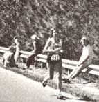

Me?
September/October 1978
Nine years ago Ken Cooper, M.D., first published Aerobics, a book dealing with a particular physical exercise program designed to strengthen the heart, lungs, and circulatory system. A fitness program, if you will, that works you hard but always in the presence of free oxygen (without making you feel "out of breath"). Naturally that was appealing!
Since that book (and two other equally successful volumes, Aerobics for Women and The New Aerobics) hit the stands, some sixty million Americans have taken to running, cycling, walking, jumping rope, and swimming their way to better health. The death rate from heart disease has decreased ten percent. And the typical American (whoever that might be) has increased his or her life span from 70.9 to 72.0 years.
Important statistics . . . but still statistics. This short excerpt from The Aerobics Way by Kenneth H. Cooper, M.D., MPH. (copyright © 1977 by Kenneth H. Cooper and reprinted by permission of the publisher, M. Evans and Co., Inc., New York, New York 10017) turns those statistics into something that most of us can more readily understand by dealing not so much with the number of our years . . . but how we use 'em!
I KNOW IT'S GOOD
A patient asked me this question not long ago, and followed it up with, "Will l feel better?"
For a moment I was going to say, "What do you mean? Of course you'll feel better!" But then I saw his point.
He wasn't talking about feelings in his body.
It's common to separate the mind, or the spirit, from the body. Perhaps that's one reason why some of us neglect our bodies, even when they hurt, and still feel as if we were doing something virtuous: "carrying on", without "giving in".
Yet I can assure you that there is an interrelation between the body and the mind.
To begin with, chemical substances taken in through the body have a measurable effect on the mind. Alcohol, glucose imbalance, and vitamin deficiency all change one's mental outlook and performance, just as do the prescription chemical stimulants and depressants, the "mood elevators" and "tranquilizers".
Likewise, positive or negative thoughts from the mind affect the body, as countless studies of psychosomatic illness have shown-not to mention the many instances in our histories and legends where people have grown ill and died from the emotional wounds we call a "broken heart".
Yet what about the reverse? Supposing we strengthen the heart, improve cardiovascular fitness: Will that affect the mind just as surely as a chemical stimulant or depressant? Both our theory and-our research evidence indicate "yes".
In the first place, improving cardiovascular fitness-through diet, exercise, weight control, and proper rest-has a direct chemical effect on the brain. The increased circulatory flow to the brain makes available more oxygen and more glucose, both of which are necessary for the mind to function. A man whose oxygen supply is cut off will "black out" quickly, just as will a man whose glucose supply is lowered during insulin shock.
Conversely, an individual whose circulation has improved, giving his brain more oxygen and more glucose, will feel more wide awake and alert, more ready to handle whatever stresses or challenges the day has in store. Many times I have noted myself suffering from mental fatigue and dullness after hours of writing or working on a difficult problem. If I then take an exercise break, it is amazing how quickly the alertness and mental productivity improves. Hours of dullness can be replaced by moments of effective creativity.
FOR MY BODY
I've often asked people why they started their exercise programs, and the answers usually have to do with something connected with physical health: a bad physical examination, a friend or relative who had a heart attack, and so on.
But when I ask, "All right, now what makes you keep running or swimming or cycling?" I nearly always hear the same answer: "It makes me feel so much better." In fact, if there's one benefit of aerobic exercise I hear about more than any other, it's this improvement in a person's own capability and capacity, this feeling that the "fuzziness" has cleared and that he's ready for anything.
So strong is this positive feeling that, for many people, the improvement in coronary risk factors and the weight reduction and all the other physical benefits are almost secondary.
BUT WILL IT HELP
Take self-image for example. It's easy to understand how that would improve in a person who changed a lot of flab to muscle through aerobic exercise, whose skin began to glow, and whose eyes began to sparkle. That person could see his or her own actual image change to one more attractive. But another benefit of a regular exercise program in this area may have nothing to do with these visible results.
Rather it's the discipline itself, the fact that one's set a challenge and has overcome it by sticking regularly to the exercise program, that seems also to affect the self-image in a positive way. People get a sense that they can do what they set out to do, and this gives a sense of accomplishment and independence many haven't felt so strongly in a long time
As another benefit, the use of an exercise "break" in the routine level of consciousness in order to increase creativity and mental strength has been advocated by a number of psychologists. William Glasser, in his book Positive Addiction, cites the benefits of "losing oneself in a positive activity on a regular basis".
Regardless of the theory you ascribe to, it makes sense to get aerobic exercise on a regular basis. How many positive things do you do for yourself-things that no one can take away from you? The only risk you run is that you'll feel too good to be able to tolerate quitting!
ME?
|
 |
 |
|
|
|
|
|